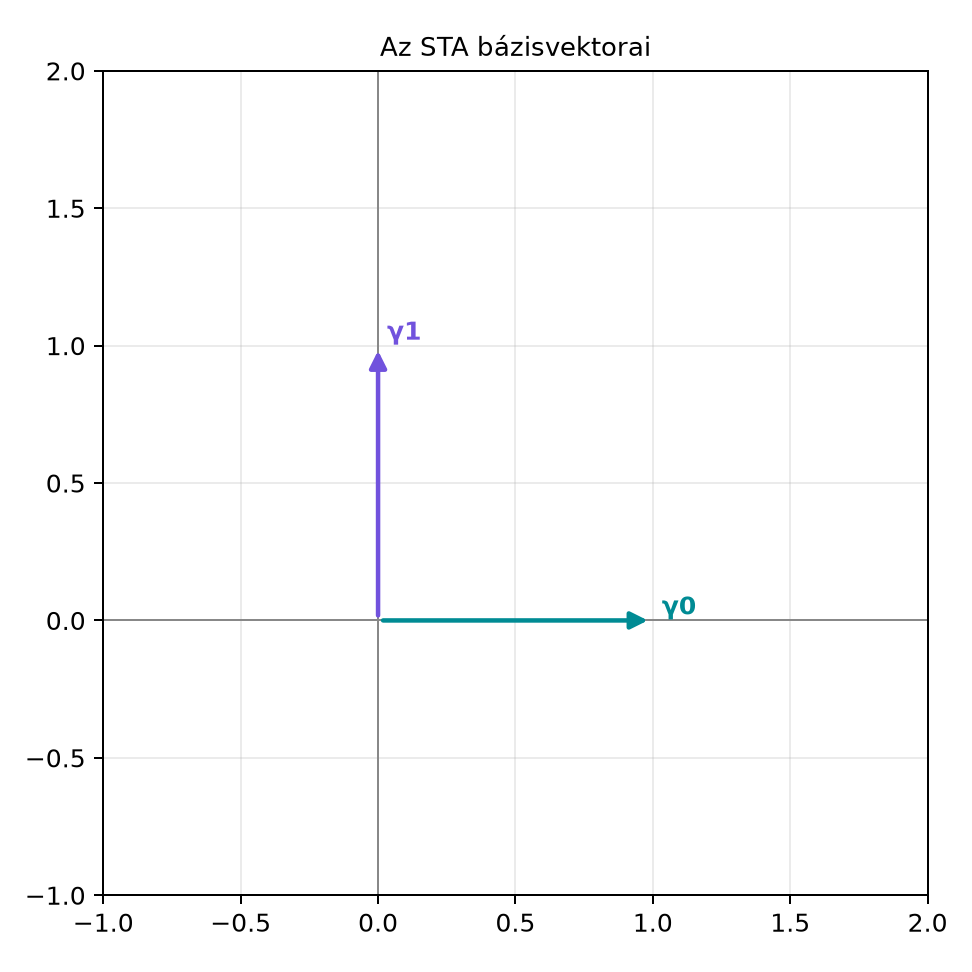

19.2 Téridő-felbontás: relatív
vektorok és a G(3) beágyazása
19.2.1 Motiváció
Az előző alfejezetben bevezettük a téridő-algebrát (STA), amelynek
bázisvektorai
,
és metrikája
:
Ez az algebra a relativisztikus fizika természetes nyelve, de a
mindennapi mechanika, elektromosságtan és grafika háromdimenziós
vektorokkal dolgozik. Felmerül a kérdés: hogyan nyerhetünk vissza egy
hétköznapi 3D-s vektorteret, vagyis a III. részben megismert
algebrát, a négydimenziós téridő-algebrából?
A válasz a téridő-felbontás (spacetime split):
kiválasztunk egy megfigyelőt, és az ő időirányához,
-hoz
képest felbontjuk a téridő-mennyiségeket idő- és térrészre. Ez nem
pusztán formális trükk, hanem hidat épít a relativisztikus és a
hétköznapi fizika között. Ugyanazt az objektumot a megfigyelő 3D-s
terében másként látjuk, de az algebrai szerkezet megőrzi a lényeget.
19.2.2 Szemléletes kép
Képzeljünk el egy megfigyelőt, aki a téridőben halad. Az ő
pillanatnyi időiránya legyen a
egységvektor. A számára „térnek” nevezett irányok a
-ra
merőleges háromdimenziós altérben vannak. Az ábrán két bázisvektort
tüntettünk fel:
-t
(idő) és
-et
(egy térirány).

Az STA bázisvektorai - γ0 az időirány, γ1
az egyik térirány; a Minkowski-metrikában γ0²=1, γ1²=−1.
A rajz csak a két irányt mutatja; a Minkowski-metrika szerint a
hossznégyzetük eltérő előjelű. A
-hoz
képest felbontott „térvektorok” nem egyszerűen a
vektorok lesznek, hanem a
és
szorzatai:
.
Ezek a relatív vektorok a megfigyelő számára már közönséges, pozitív
négyzetű térvektorokként viselkednek.
19.2.3 Definíció
Ebben az alfejezetben a téridő-vektort
(dőlt betű) jelöli, hogy megkülönböztessük a relatív 3D vektortól,
amelyet
(félkövér) jelöl. Ez az eltérés a könyv általános vektorjelölésétől csak
itt, az STA-ban szükséges.
Definíció (téridő-felbontás). Legyen
egy megfigyelő időirányú egységvektora,
.
Bármely
téridő-vektorra a jobbról
-lal
vett geometriai szorzat felbomlik skalár és bivektor részre:
Itt
a megfigyelő által mért időkomponens, és
a megfigyelő 3D terébe eső relatív vektor (relative
vector). Az STA-ban
bivektor, de a megfigyelő háromdimenziós terében vektorként
kezeljük.
A relatív vektorok bázisa a
elemek, amelyeket szintén relatív vektoroknak nevezünk.
19.2.4 Levezetés: a relatív
vektorok G(3) algebrát alkotnak
Tétel. A
relatív vektorok teljesítik a
ortonormált bázisvektorainak minden algebrai szabályát:
minden
-ra;
,
ha
;
a relatív vektorok pszeudoszkalárja megegyezik a
téridő-pszeudoszkalárral:
.
Bizonyítás. Az előző alfejezetből tudjuk, hogy a
különböző
bázisvektorok antikommutálnak, azaz
ha
.
Számítsuk ki
-et:
A harmadik lépésben kihasználtuk, hogy
és
antikommutál, mert
.
Legyen
.
Ekkor
Hasonlóan
mert
.
Összevetve a két eredményt:
,
tehát a relatív vektorok antikommutálnak.
A pszeudoszkalár kiszámítása:
Most megmutatjuk, hogy
.
Rendre cseréljük a
-t
balra:
Így valóban
,
tehát
Ezzel bebizonyítottuk, hogy a
elemek a III. részben megismert
algebra ortonormált bázisát alkotják. A megfeleltetés a szokásos térbeli
bázisvektorokkal:
Kapcsolat a III. rész G(3)-jával. A relatív vektorok
tehát nem egyszerűen „másolatai” a térbeli vektoroknak, hanem egy
beágyazott
algebrát adnak az STA-n belül. Egy
relatív vektor az STA-ban a
bivektornak felel meg, de a megfigyelő számára ugyanúgy viselkedik, mint
a hagyományos 3D vektor.
19.2.5 Kidolgozott példa
Legyen a téridő-vektor
Számítsuk ki a téridő-felbontást. A geometriai szorzat:
Tehát a megfigyelő számára az
időkomponens
,
a relatív vektor pedig
.
A
skalár valós szám,
pedig egy relatív vektor, amely
irányba mutat, hossza 3.
Ellenőrizzük, hogy a felbontás invertálható-e. Szorozzuk vissza
jobbról
-lal:
Visszakaptuk az eredeti téridő-vektort.
Ez azért van, mert
,
hiszen
.
Most vizsgáljuk meg a relatív vektor négyzetét:
A relatív vektor négyzete pozitív, ahogy egy közönséges 3D vektortól
elvárjuk, annak ellenére, hogy
.
19.2.6 Megfigyelőfüggés és
energia-impulzus felbontása
A téridő-felbontás függ a megfigyelőtől. Ha egy
másik megfigyelő időiránya
(ez egy másik egységvektor,
),
akkor ugyanarra az
téridő-vektorra a felbontás általában más:
A
és
értékek megváltoznak, ahogy a hétköznapi szemlélet is sugallja: egy
másik mozgásállapotú megfigyelő más időt és más térbeli helyzetet mér. A
következő alfejezetben látjuk majd, hogy ezt a váltást a
Lorentz-transzformáció rotorja írja le.
Energia-impulzus felbontása. A relativisztikus
fizika egyik legfontosabb téridő-vektora az energia-impulzus
négyesvektor. A
egységrendszerben
ahol
az energia,
pedig a hármasimpulzus komponensei. A téridő-felbontás szerint
Itt
a megfigyelő által mért hármasimpulzus-vektor. A négyesimpulzus tehát a
megfigyelő számára skalár energiára és relatív impulzusvektorra
bomlik.
A Lorentz-invariáns
kiszámítása a relatív vektorokkal:
ahol
.
A levezetést a feladatok között kérjük.
19.2.7 Tipikus hibák és
félreértések
Fokszám keverése. Az STA-ban a relatív vektor
egy bivektor, nem vektor. Csak a megfigyelő háromdimenziós terébe
ágyazott
algebrában értelmezzük vektorként. Ha a fokszámot nem tartjuk számon,
könnyen rossz következtetésre jutunk.
Előjelhiba a relatív vektor négyzeténél. Sokan
azt gondolják, hogy mivel
,
a
négyzete is negatív. A levezetésből láttuk, hogy
,
mert a
-lal
való szorzás előjelet fordít.
A szorzat sorrendje. A
relatív vektorok antikommutálnak:
,
ha
.
Ez megegyezik a
bázisvektorok külső szorzatának viselkedésével, de az STA-ban a
nem egyenlő
-lel,
hanem annak ellentettje:
.
19.2.8 Feladatok
Fogalmi kérdés. Miért teljesül
,
ha
?
Kézi számolás. Legyen
.
Írd fel a
téridő-felbontást, azonosítsd
-t
és
-et,
majd szorozd vissza
-lal,
és ellenőrizd, hogy visszakapod
-et.
Levezetési feladat. Bizonyítsd be részletesen,
hogy a relatív vektorok pszeudoszkalárja
,
ahol
.
Alkalmazási feladat. Az energia-impulzus
négyesvektor
(a
egységben). Add meg a
felbontást, és számold ki a
Lorentz-invariánst. Ellenőrizd, hogy
,
ahol
.
19.2.9 Megoldások
1. megoldás. A
szorzatban a
és
antikommutál, mert különböző bázisvektorok. Ezért
.
A
miatt a negatív előjel és a negatív négyzet együtt pozitív eredményt
ad.
2. megoldás.
Tehát
és
.
Visszaszorzás:
3. megoldás.
Most
,
mert a
-t
három lépésben balra visszük, minden csere előjelet vált. Tehát
,
így
.
4. megoldás. A téridő-felbontás:
A négyesimpulzus négyzete:
A középső tag nulla, mert
.
A harmadik tag:
mert
és a vegyes tagok antikommutáció miatt kiesnek. Így
19.2.10 Rövid összefoglaló
A téridő-felbontás egy megfigyelő
időiránya mentén bontja fel a téridő-vektorokat:
,
ahol
skalár és
relatív vektor. A
relatív vektorok teljesítik a
algebra szabályait:
,
(),
és
.
A felbontás megfigyelőfüggő, más
más
és
értékeket ad. Az energia-impulzus négyesvektor felbontása
,
és invariáns négyzete
.
Ezt a felbontást használjuk a Lorentz-transzformációk mint rotorok és a Maxwell-egyenlet a téridőben: ∇F = J
alfejezetekben.
19.2.11 Források és ellenőrzési
hiányok
A téridő-felbontás konvenciója David Hestenes nevéhez köthető; a
részletek azonban forrásonként eltérhetnek. Ebben a könyvben a
,
metrikát és a
definíciót használjuk. Más szerzőknél a metrika előjele vagy a relatív
vektorok definíciója eltérhet, ezért külső forrásokkal való
összevetéskor mindig ellenőrizni kell a konvenciókat.